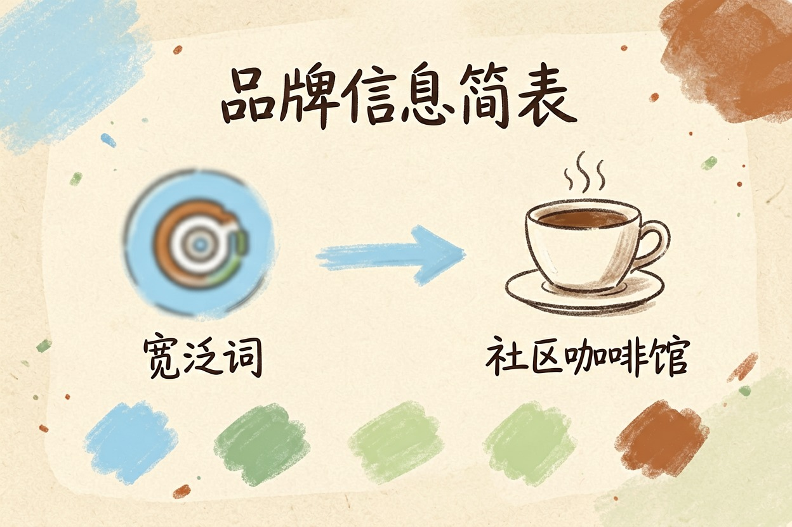
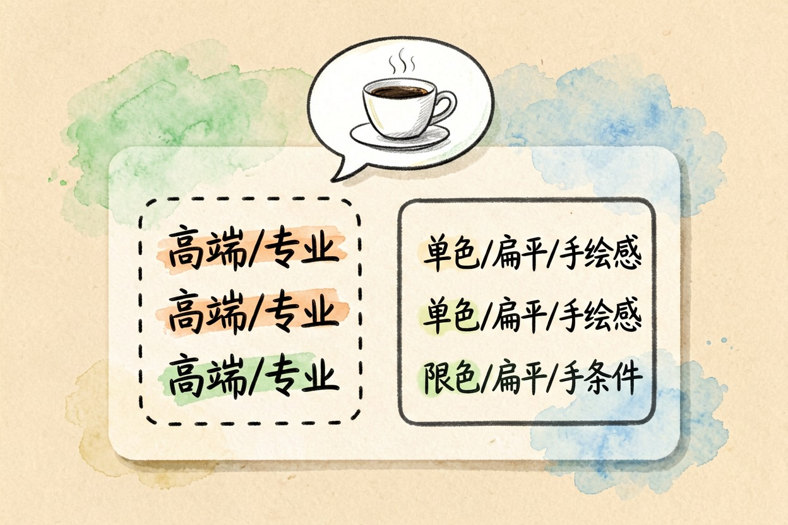
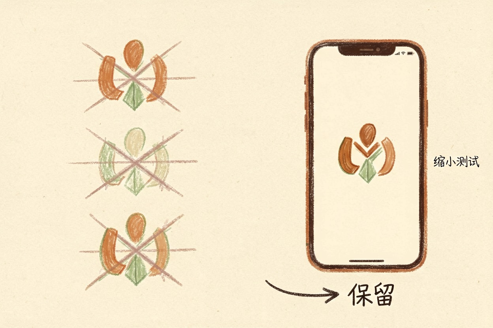
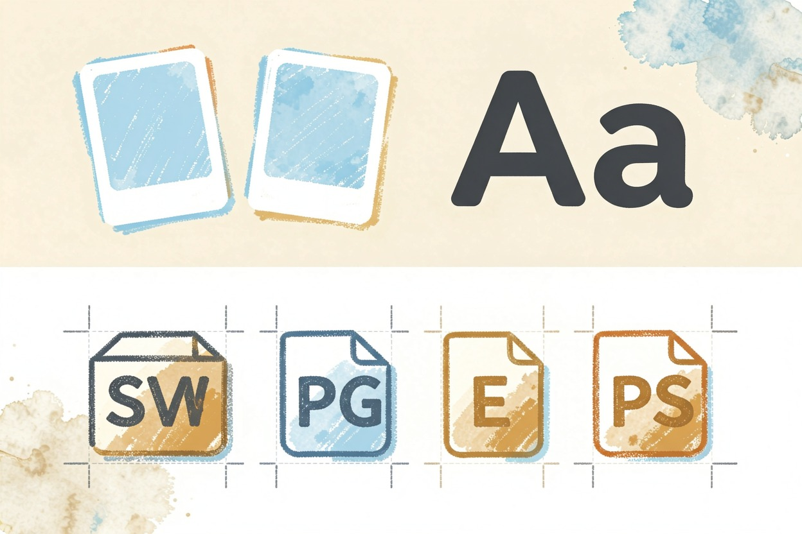
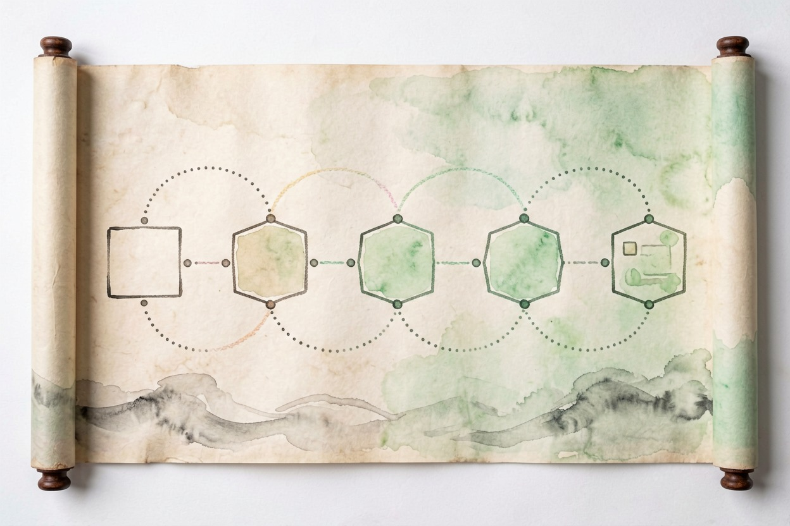

用 AI 设计 logo？小团队省钱的实际做法 — Learntide
想用模型出 logo，先把你是谁、叫什么、想要什么感觉写在一张纸上再动手开工。
ai设计logo：先把行业和名称讲清楚

ai设计logo最常出的问题是千篇一律。科技都爱用蓝渐变，餐饮都爱用扁勺子，撞脸了根本分不清谁是谁。
动手前先填一张简表。行业是什么，品牌名叫什么，想要专业还是亲切，竞品长什么样。信息越具体，模型越不容易套模板。
名字要不要进图要想好。文字标和图形标是两回事，前者认名字，后者认形状，别一上来就混着来。
行业词别只写一个字。写「社区咖啡馆」比写「餐饮」强太多，模型才知道往暖色和手感上靠。
简表别藏着。每次出图都粘在提示词开头，模型才不会忘，前后几十张才能是一个调性。
竞品图也贴一张。让模型知道别长那样，比空说「要独特」管用。
给模型一段能用的提示词

简表填完，提示词就有了骨架。把限制条件逐条列出来。
你是品牌设计师。请为以下品牌生成 logo 草图描述。
品牌：社区咖啡馆「慢方」
气质：温暖、安静、手作感
形式：图形标，一杯冒热气的简笔咖啡
限制：只用单色或双色，不要渐变，不要三维
输出：3 个方向的构图说明 + 可生图提示词出图后先看方向对不对。气质跑偏就重设限制，别在错误方向上精修，越修越拧。
同一轮多要几个方向。极简、手绘、几何各来一个，横向比才知道哪种最贴你。
提示词别贪长。把「专业」「高端」这种空词去掉，换成可执行的限制，模型才不跑偏。
出图数量别省。一轮跑八张比跑两张选择多，挑中的概率高。
从草图里筛出能用的

草图一堆，先砍再选。看不清、太复杂、和竞品撞脸的，直接淘汰。
能用的标要小得住。缩小到头像大小还能认，才是好标。在手机上看一眼，糊掉的就是不过关。
图形标记得配文字。光一个图形很多人记不住名字，旁边排上品牌名，识别度立刻上来。
淘汰也别一次删光。先分出一二三档，第一档细看，二三档回头再比，免得误删好稿。
描边要一致。线宽统一，别这张粗那张细，成套才像出自一人。
字体配色与交付规范

配色别贪多。单色最稳，双色够用，三种以上就乱。打印和屏幕上都要试，偏色就调。
字体选无衬线更保险。小字号下清晰，放大也不尴尬，手写体只适合个别氛围品牌。
交付要矢量文件。png 方便预览，真正用要 svg 或 eps，放大不糊，印刷才稳。
源文件别丢。改字换色都在矢量稿上动，丢了就重画，前功尽弃最可惜。
留白也要规范。标周边留多少，写进交付要求，印刷才不挤边。
注册前先确认权利
别把模型出的图直接拿去注册。也别省掉查重这步，先去商标库扫一遍近似，避免日后被异议。
商业用途更要小心。模型训练数据来源说不清，产出物权利有争议，上线前最好找人确认。
免费和付费要分清。个人玩和开店卖，权利边界不同，别混为一谈。
工具从工具导航里挑一个顺手的就行，ai设计logo真正省下的，是找对方向前那笔反复试错的设计费。

本文信息核对于 2026-08-08。AI 产品的价格、免费额度与功能变动频繁，实际以各工具官网当前说明为准。